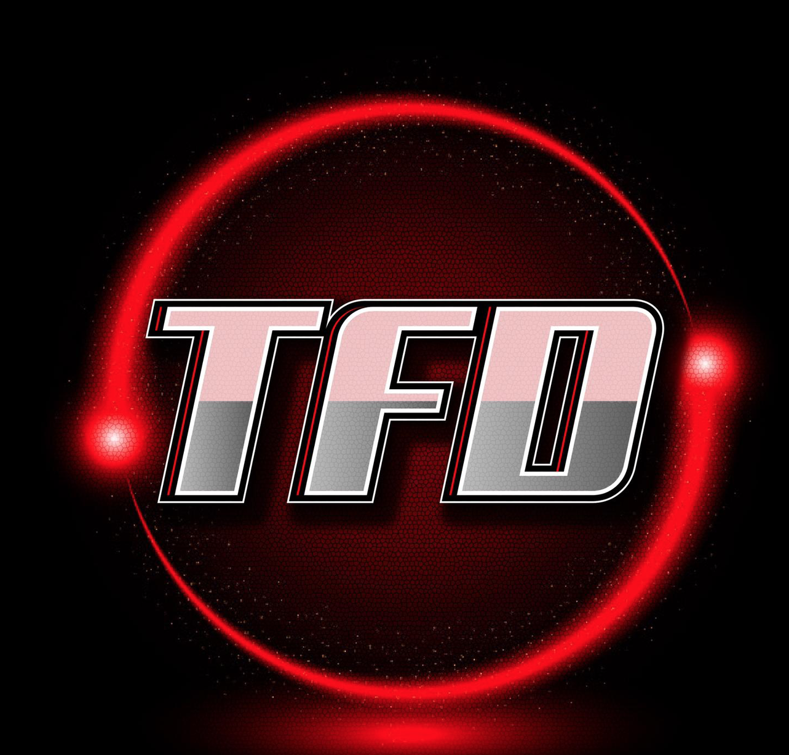

<ion-content color="dark" [fullscreen]="true" scrollEvents="true">

  <div class='header'>
    <ion-avatar [ngStyle]="{'border': activeBasketBall ? '#f2321c 3px solid' : 'none' }" (click)="showBasketBall()">
      
    </ion-avatar>
    <ion-avatar [ngStyle]="{'border': activeFootBall ? '#f2321c 3px solid' : 'none' }" (click)="showFootBall()">
      
    </ion-avatar>
    <ion-thumbnail>
      
    </ion-thumbnail>
    <ion-avatar [ngStyle]="{'border': activeBaseBall ? '#f2321c 3px solid' : 'none' }" (click)="showBaseBall()">
      
    </ion-avatar>
    <ion-avatar [ngStyle]="{'border': activeHockey ? '#f2321c 3px solid' : 'none' }" (click)="showHocky()">
      
    </ion-avatar>

</div>
  <ion-segment color="primary" *ngIf="!this.switchToMasterList"  scrollable mode=md [(ngModel)]="segment" (ionChange)='tweetRequestBasketBall()'>
    <ion-segment-button value="Injuries">
      <ion-label color="dark">Injuries</ion-label>
    </ion-segment-button>
    <ion-segment-button value="news">
      <ion-label color="dark">News</ion-label>
    </ion-segment-button>
    <ion-segment-button value="youtube">
      <ion-icon size=large color='danger' name='logo-youtube'></ion-icon>
    </ion-segment-button>
    <ion-segment-button value="Beat">
      <ion-label color="dark">Beat Writers</ion-label>
    </ion-segment-button>
    <ion-segment-button value="Fantasy">
      <ion-label color="dark">Fantasy</ion-label>
    </ion-segment-button>
  </ion-segment>

  <!-- Skelton Layout for Tweets-->
  <ion-row [hidden]="!isLoading" class="wrapper" *ngFor="let item of [1,1,1,1,1]">
    <ion-col class="skelton" size="2">
      <ion-avatar>
        <ion-skeleton-text animated></ion-skeleton-text>
      </ion-avatar>
    </ion-col>
    <ion-col class="skelton" size="10">
      <ion-row class="tweet-info">
        <ion-col size="12">
          <span class="name">
            <ion-skeleton-text animated style="width: 50%"></ion-skeleton-text>
          </span>
        </ion-col>
      </ion-row>
      <ion-row>
        <ion-col class="skelton" size="12">
          <div>
            <ion-text>
              <ion-skeleton-text animated style="width: 100%"></ion-skeleton-text>
            </ion-text>
            <ion-text>
              <ion-skeleton-text animated style="width: 100%"></ion-skeleton-text>
            </ion-text>
            <ion-text>
              <ion-skeleton-text animated style="width: 100%"></ion-skeleton-text>
            </ion-text>
          </div>
          <div style="margin-top: 5%;">
            <ion-skeleton-text animated style="width: 100%; height: 100px"></ion-skeleton-text>
          </div>
        </ion-col>
      </ion-row>
    </ion-col>
  </ion-row>

  <!-- Real Data for Tweets -->
  <div class="tweets" *ngIf="!isLoading && segment !== 'youtube'">
    <ion-row class="wrapper" *ngFor="let tweet of tweets">
      <ion-col size="2">
        <ion-avatar id="avatar">
          <ion-img [src]="tweet.user.profile_image_url_https" alt=""></ion-img>
        </ion-avatar>
      </ion-col>
      <ion-col size="10">
        <ion-row class="tweet-info">
          <ion-col size="12">
            <span class="name">{{ tweet.user.name }} </span>
            <span class="handle">@{{ tweet.user.screen_name }}</span>
            <span class="handle">• {{ tweet.created_at | date: 'shortTime' }}</span>
          </ion-col>
        </ion-row>
        <ion-row>
          <ion-label color="primary" *ngIf="tweet.entities.hashtags.length !== 0">
            <span *ngFor="let hashtag of tweet.entities.hashtags">
              #{{ hashtag.text }}
            </span>
          </ion-label>
          <ion-label color="primary" *ngIf="tweet.entities.user_mentions.length !== 0">
            <span *ngFor="let mention of tweet.entities.user_mentions">
              @{{ mention.screen_name }}
            </span>
          </ion-label>
        </ion-row>
        <ion-row>
          <ion-col size="12">
            <span class="tweetText" [innerText]='tweet.text'></span><br>
            <ion-label *ngIf="tweet.entities.urls.length !== 0" (click)="openTwitterLink(tweet.entities.urls[0].url)"
              color="primary">{{ tweet.entities.urls[0].url }}</ion-label>
            <div *ngIf="tweet.entities.media !== 'undefined'"></div>
            <ion-img *ngFor="let media of tweet.entities.media" class="preview-img" [src]="media.media_url_https"
              alt=''></ion-img>
          </ion-col>
        </ion-row>
        <ion-row class="ion-justify-content-start">
          <ion-col>
            <ion-button href="https://twitter.com/intent/tweet?in_reply_to={{ tweet.id_str }}" fill="clear" color="primary" size="small">
              <ion-icon name="chatbubble-outline" slot="start"></ion-icon>
              {{ tweet.response }}
            </ion-button>
          </ion-col>
          <ion-col>
            <ion-button href="https://twitter.com/intent/retweet?tweet_id={{ tweet.id_str }}" fill="clear" color="primary" size="small">
              <ion-icon name="repeat-outline" slot="start"></ion-icon>
              {{ tweet.retweet_count }}
            </ion-button>
          </ion-col>
          <ion-col>
            <ion-button href="https://twitter.com/intent/like?tweet_id={{ tweet.id_str }}" fill="clear" color="primary" size="small">
              <ion-icon name="heart-outline" slot="start"></ion-icon>
              {{ tweet.favorite_count }}
            </ion-button>
          </ion-col>
        </ion-row>
      </ion-col>
    </ion-row>
  </div>

  <ion-spinner color='danger' *ngIf="youtubeLoader"></ion-spinner>
  <!-- Real Data For Youtube Player -->
  <div *ngIf="!isLoading && segment === 'youtube'">
    <ion-card *ngFor="let video of videos">
      <iframe width="100%" height="315" [src]="video.snippet.resourceId.videoId | youtube" allow="accelerometer; autoplay; clipboard-write; encrypted-media; gyroscope; picture-in-picture" allowfullscreen></iframe>
      <ion-row class="wrapper">
        <ion-col size=2>
          <ion-avatar item-left>
            
          </ion-avatar>
        </ion-col>
        <ion-col size=10>
          <ion-card-title color="secondary">{{ video.snippet.title }}</ion-card-title>
          <ion-label color="tertiary">
            <span>{{ video.snippet.channelTitle }} • {{ video.snippet.publishedAt | date: 'mediumDate' }} {{
              video.snippet.publishTime | date: 'shortTime' }}</span>
          </ion-label>
        </ion-col>
      </ion-row>
    </ion-card>
    <ion-infinite-scroll color="primary" (ionInfinite)="loadVideos($event)">
      <ion-infinite-scroll-content loadingSpinner="lines" loadingText="Loading more Videos...">
      </ion-infinite-scroll-content>
    </ion-infinite-scroll>
  </div>


  <div class='noTweet' *ngIf="noTweet" >
    
    <h1 class="ion-text-center">Nothing Yet<br>Try Sometime Later</h1>
  </div>
</ion-content>